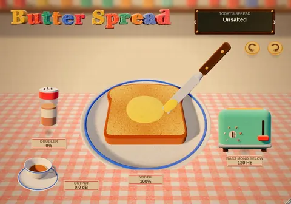

Mixing plugins for beginners
Most plugins look like aeroplane cockpits. Ours look like kitchens, and each one has a single main control that does the right thing. If you are new to mixing, start with these five.
Black Friday: all 16 plugins for $29 with the Full Fridge (was $50), until 1 December. See the deals
You only need five tools to finish a song: an EQ, a compressor, a reverb, something for loudness and something to master with. Learn those and everything else is seasoning.
Each of these shows you what it is doing while you turn it, so you learn what an EQ curve or a compressor actually does as you go.
What to reach for
- Spice Shelf EQ (equalizer). An EQ with five jars named for how they taste, and a live curve so you can see what you did.
- Popcorn Sandwich Compressor (compressor). One dial. Left squeezes, right pops, the middle does nothing.
- Bread Oven Reverb (reverb). Pick a bread for the room size and turn up the fire for longer tails.
- Ghost Pepper Clipper (clipper). Loudness without the maths: push until the ghost rises, then back off a little.
- Cherry on the Top Mastering (mastering). Finishes the track from one dial, with Spotify and Apple loudness built in.
- Butter Spread (stereo widener). A free licence to start with: a stereo widener that stays safe in mono.
 Spice Shelf EQEQ plugin
Spice Shelf EQEQ plugin Popcorn Sandwich CompressorCompressor plugin
Popcorn Sandwich CompressorCompressor plugin Bread Oven ReverbReverb plugin
Bread Oven ReverbReverb plugin Ghost Pepper ClipperClipper plugin
Ghost Pepper ClipperClipper plugin Cherry on the Top MasteringMastering plugin
Cherry on the Top MasteringMastering plugin
Butter SpreadFree stereo widener plugin
Get all 16 in the Full FridgeTry them free first
Recipes to try
- A vocal chain for beginners
- A mastering chain for beginners
- Free mixing plugins in 2026: try all 16 of ours free
Questions
What plugins should a beginner get first?
An EQ, a compressor and a reverb, then something for loudness and mastering. Spice Shelf EQ, Popcorn Sandwich Compressor, Bread Oven Reverb, Ghost Pepper Clipper and Cherry on the Top cover it.
Do I need to know music theory or engineering?
No. Each plugin has one main control and shows you what it is doing. Turn it until it sounds good.
Can I try them before buying?
Yes. Every plugin has a 3-day free trial, and Butter Spread, our stereo widener, comes with a free licence.
Which formats do they come in?
AU, VST3 and AAX on Mac (Apple-notarised installers) and VST3 on Windows 10 and 11.
More menus
Lo-fiVocalsDrumsMasteringCreative effectsHip hop and trapFL StudioLogic ProAbleton LivePro Tools